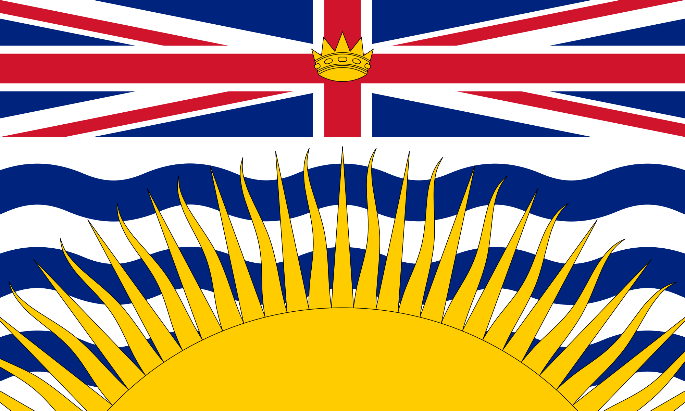
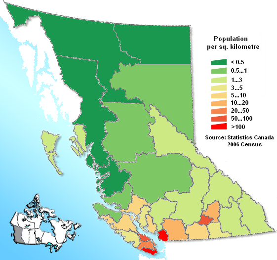
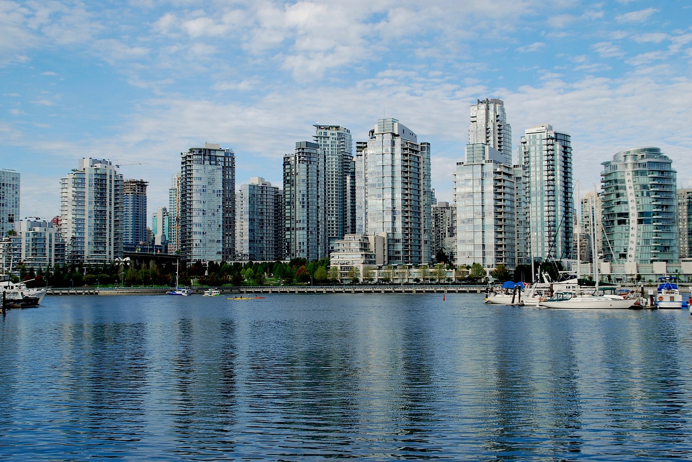
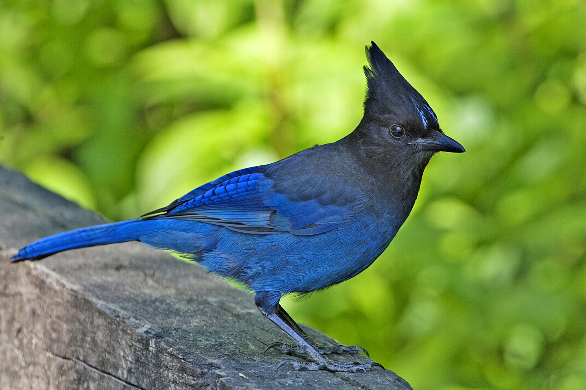
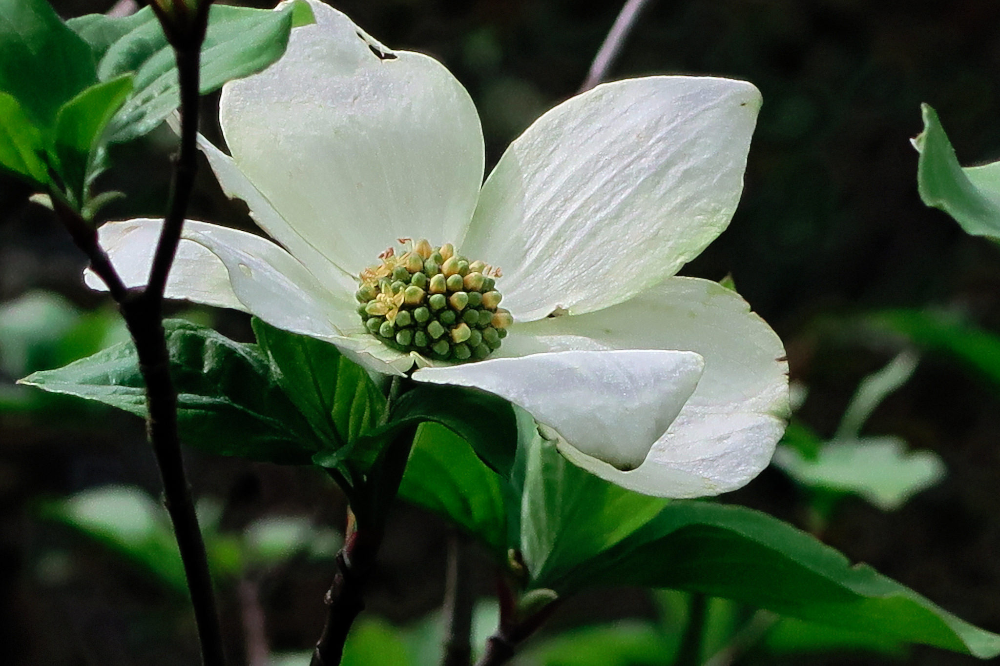
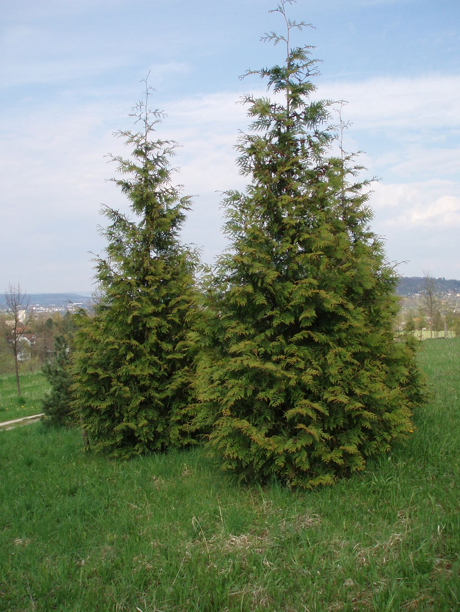

About

- Population (2016): 4,648,055
- Capital: Victoria
- Largest City: Vancouver
- Provincial Bird: Steller's Jay
- Provincial Flower: Pacific Dogwood
- Provincial Tree: Western Red Cedar






British Columbia's capital is Victoria, located at the southeastern tip of Vancouver Island. Only a narrow strip of Vancouver Island, from Campbell River to Victoria, is significantly populated. Much of the western part of Vancouver Island and the rest of the coast is covered by temperate rainforest. The province's most populous city is Vancouver, which is at the confluence of the Fraser River and Georgia Strait, in the mainland's southwest corner (an area often called the Lower Mainland). By land area, Abbotsford is the largest city. Vanderhoof is near the geographic centre of the province.